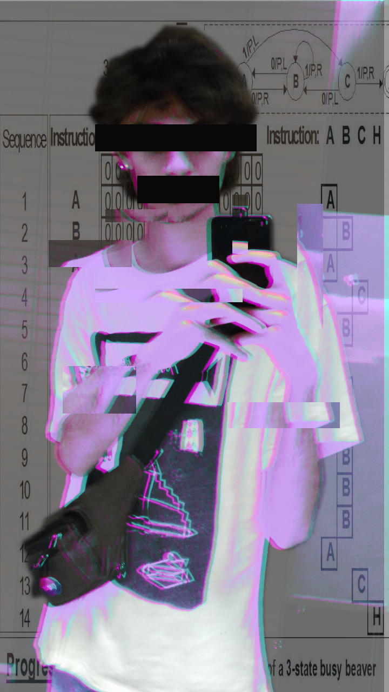

about the webmaster
gabi:
i'm a computer science student in a public university in andalusia. 20 years old at the moment. very interested in foss, phylosophy and literature(ccru, left-gender-accelerationism, deleuze & guattari, situationism, egoism).
as i mentioned earlier i'm from andalusia (spain) so i speak spanish and a little bit of catalan, aside from english which isn't my first language by far :P, so i guess most of my writtings are going to be in spanish.
my pronouns are he/him/his and (or) they/them/theirs (use them indistinctly!), in spanish él and elle :).
